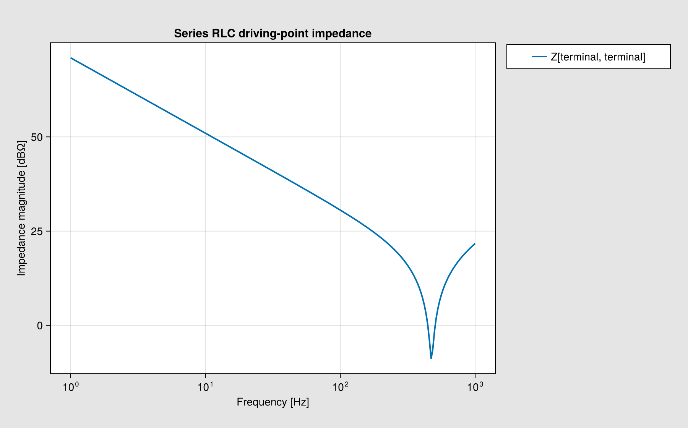
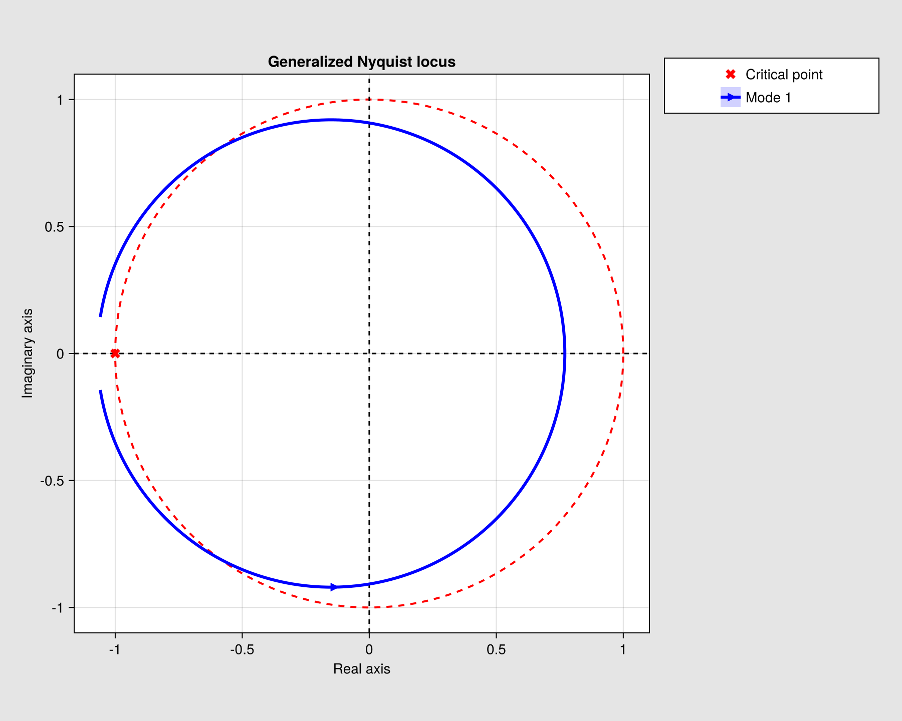
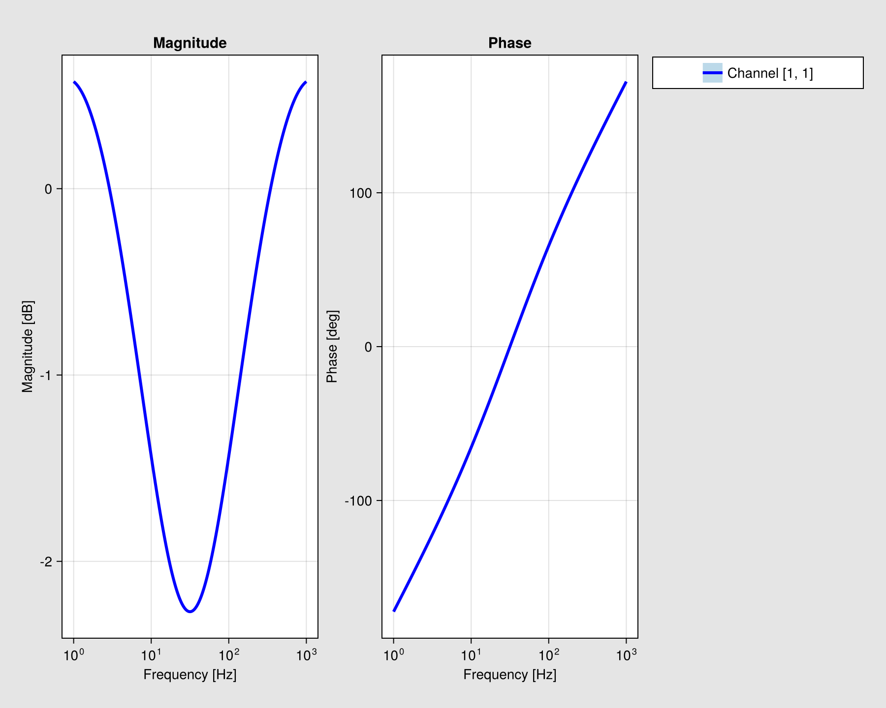
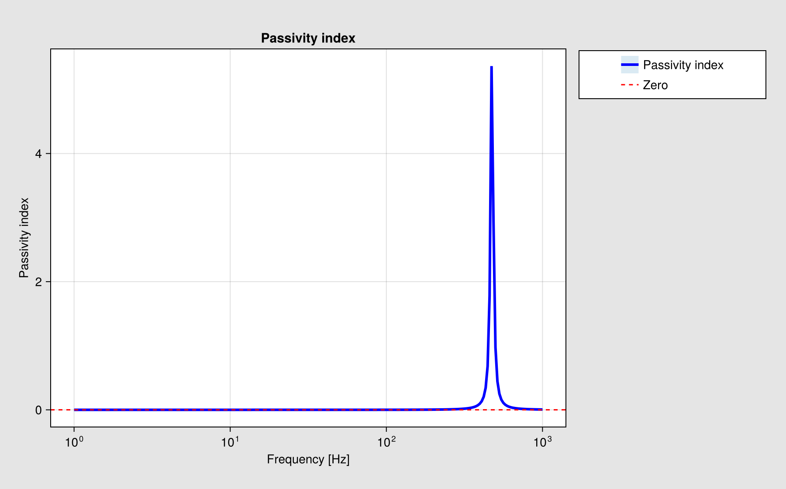
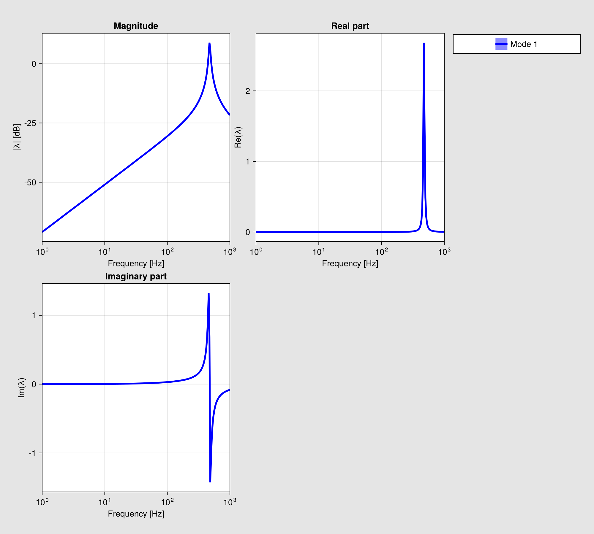
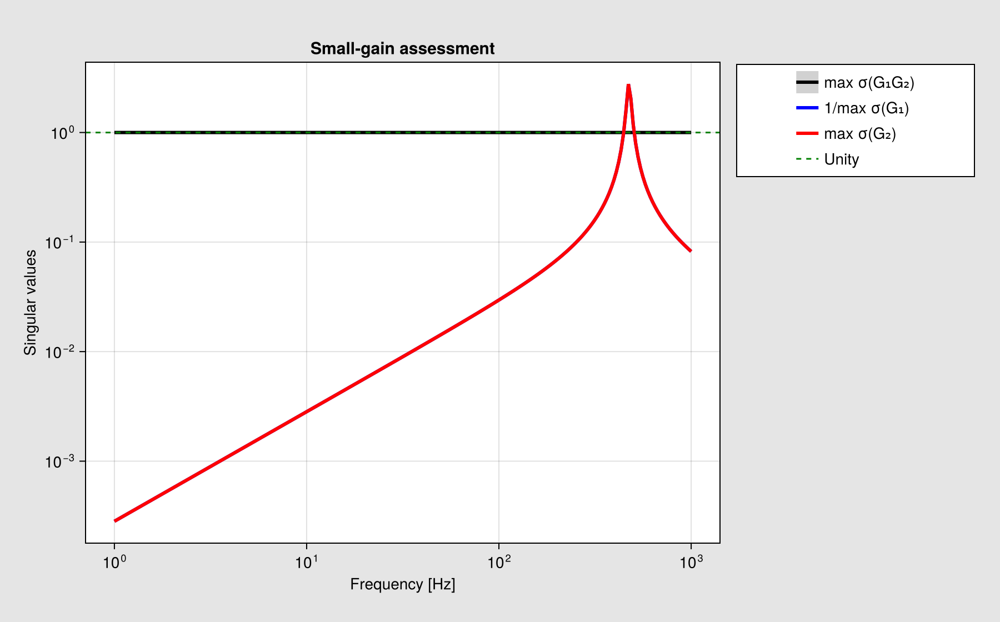
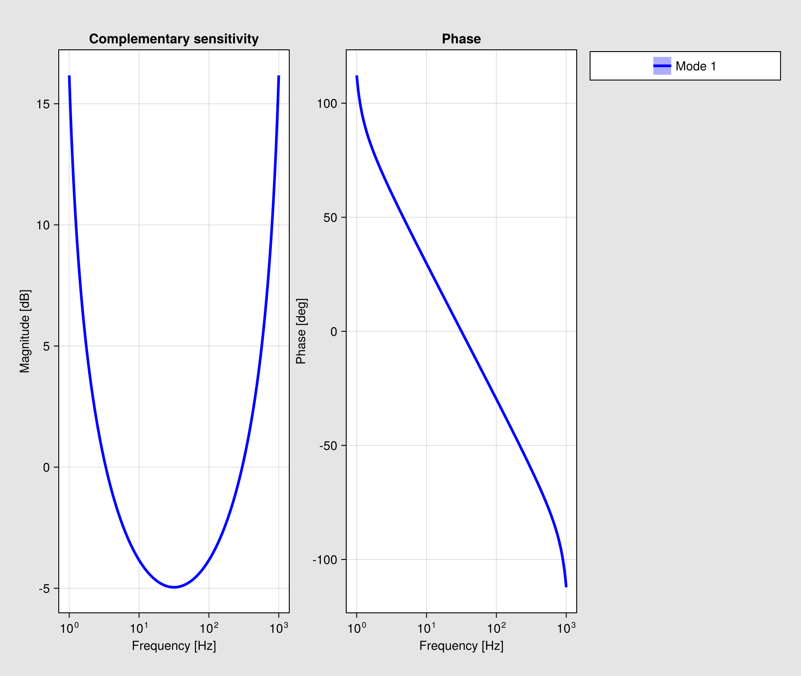

PlotBuilder guide
PlotBuilder converts completed calculation results into backend-neutral render definitions. PlotBuilder.make_render does not load Makie or repeat a numerical calculation.
Definitions
The public definitions are:
HarmonicImpedancePlotDefinitionNyquistPlotDefinitionBodePlotDefinitionPassivityPlotDefinitionSmallGainPlotDefinitionEigenvaluePlotDefinitionUnstableFrequencyPlotDefinition
render = PlotBuilder.make_render(
NyquistPlotDefinition,
completed_nyquist;
zoom = true,
)A RenderDefinition contains PageDefinition values. Each page contains its layout, views, controls, legend, colorbars, status, and export definition. Views contain typed axes and series. Supported series primitives include lines, scatter markers, horizontal and vertical references, and bands.
Harmonic impedance
The harmonic definition accepts primitive and composite completed frequency responses. It supports diagonal, complete-matrix, and selected entries. The layout can overlay curves or separate them into panels and pages. Frequency axes may be linear or logarithmic, with node labels and dBΩ conversion.
render = PlotBuilder.make_render(
HarmonicImpedancePlotDefinition,
impedance_result;
entries = :all,
grouping = :panels,
)Stability definitions
Stability definitions accept StabilityResult, ParametricResult{<:StabilityResult}, and supported uncertainty results. Composite definitions read completed trajectories from details.plot_data.
Nyquist renders matched modes, conjugate branches, reference geometry, direction markers, indentation gaps, zoom, ensemble traces, and quantile spread. Bode renders aligned magnitude and phase channels. The other definitions preserve passivity bands, small-gain references, eigenvalue views, the optional determinant page, and unstable-frequency markers and aggregate probabilities.
Rendered gallery
The gallery uses completed scalar responses so the figures are quick to rebuild. The same definitions accept results from full network calculations and composite studies.
using CairoMakie
using PowerImpedance
frequency_hz = 10.0 .^ range(0, 3; length=240)
omega = 2π .* frequency_hz
series_rlc = 0.35 .+ im .* (omega .* 2.5e-3 .- 1 ./ (omega .* 45e-6))
impedance_response = FrequencyResponseResult(
NodalImpedance(),
:nodal_impedance,
reshape(series_rlc, 1, 1, :),
omega,
[:terminal],
nothing,
(;),
)
only(PowerImpedance.plot(
impedance_response;
title="Series RLC driving-point impedance",
display_plot=false,
controls=false,
)).figure
The generalized Nyquist and Bode figures below use one completed loop-gain sweep.
theta = range(-0.95π, 0.95π; length=length(omega))
loop_locus = -0.15 .+ 0.92 .* exp.(im .* theta)
loop_response = FrequencyResponseResult(
LoopGain(),
:loopgain,
reshape(loop_locus, 1, 1, :),
omega,
[:mode],
nothing,
(;),
)
nyquist_result = compute(StabilityProblem(loop_response), GeneralizedNyquist())
only(PowerImpedance.plot(
nyquist_result;
title="Generalized Nyquist locus",
display_plot=false,
controls=false,
)).figure
bode_result = compute(StabilityProblem(loop_response), BodeAnalysis())
only(PowerImpedance.plot(
bode_result;
title="Loop-gain magnitude and phase",
display_plot=false,
controls=false,
)).figure
Passivity and modal plots consume a completed nodal-admittance sweep.
admittance_response = FrequencyResponseResult(
NodeAdmittance(),
:node_admittance,
reshape(1 ./ series_rlc, 1, 1, :),
omega,
[:terminal],
nothing,
(;),
)
passivity_result = compute(StabilityProblem(admittance_response), PassivityAnalysis())
only(PowerImpedance.plot(
passivity_result;
title="Passivity index",
display_plot=false,
controls=false,
)).figure
eigenvalue_result = compute(
StabilityProblem(admittance_response),
EigenvalueAnalysis(fmin=1.0, fmax=1e3, determinant=true),
)
first(PowerImpedance.plot(
eigenvalue_result;
title="Admittance eigenvalue",
display_plot=false,
controls=false,
)).figure
The small-gain and frequency-detection definitions use the same completed sweeps.
small_gain_result = compute(
StabilityProblem((impedance_response, admittance_response)),
SmallGainAnalysis(),
)
only(PowerImpedance.plot(
small_gain_result;
title="Small-gain assessment",
display_plot=false,
controls=false,
)).figure
detected_result = compute(
StabilityProblem(loop_response),
UnstableFrequencyAnalysis(order_maxima=3),
)
only(PowerImpedance.plot(
detected_result;
title="Complementary-sensitivity peaks",
display_plot=false,
controls=false,
)).figure
Makie rendering
Install and load one backend:
using PowerImpedance
using CairoMakie
handles = PowerImpedance.plot(result; display_plot = false)
handle = only(handles)CairoMakie produces static output. GLMakie and WGLMakie provide interactive controls for reset, scale switching, legend visibility, and export. The layout responds to figure resizing.
PowerImpedance.plot and Makie.plot select a definition from the result kind or analysis. Bode plotting can add completed series to an existing UIPlot or a vector of UIPlot handles through the plots keyword.
SVG export
export_svg(
handle;
path = "stability.svg",
theme = :publication,
open_file = false,
)Existing paths are not overwritten. Omitting path creates a timestamped name. Export uses CairoMakie while retaining current scales, limits, and series visibility.
Custom definitions
Custom recipes subtype PlotBuilder.AbstractPlotDefinition and specialize the grammar accessors for accepted input, axes, series, grouping, layouts, controls, and export. Use the Definition suffix for data-model types and the matching *_definition accessor names.